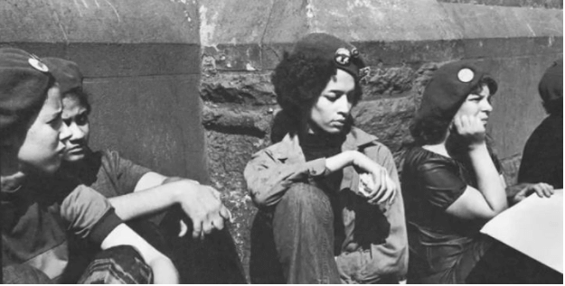

About the Young Lords
As a street gang occupying the Lincoln Park neighborhood of Chicago, The Young Lords provided what most gangs in the 1960’s provided marginalized youth—protection, recognition, and a sense of autonomy despite disparate conditions. These conditions were exacerbated by the urban renewal programs championed by Mayor Richard Daly, which effectively redlined Lincoln Park for further development into a wealthy suburb and pushing out the majority Puerto Rican and Black populations further from the city center.
One YL member, José “Cha Cha” Jiménez, relied on the skills he learned from the YL gang in order to support his frequently relocated family. During one stint in jail for drug possession in 1968, Jiménmez witnessed the frequent mistreatment of undocumented Mexican field workers at the behest of the police. He volunteered to be a translator for the monolingual police, and after reading the works of Thomas Merton OCSO, made the conscious effort to work toward bettering the lives of people like himself. Using the Black Panther Party as a template, Jiménez re-envisioned the Young Lords, refocusing their efforts from turf wars to protecting the people they lived with. They took direct action to address the needs of the community. They truly embodied a revolutionary approach to community care and utilized all their rhetorical tools to bring about attention toward health equity in the Bronx.
One such tool was the publication of their own newspaper, distributed in communities like the Bronx, Palante. A familiar term amongst Latinx and Afro-Latinx of the Caribbean and its diaspora, it is a shortened mash-up of para adelante, meaning “forward.” This rallying call, front and center on the masthead, informed community citizens of the issues important to the Young Lords, manifestos, and calls to direct action. The second issue, published in May of 1970, publicized what would become known as the “13 Point Program and Platform of the Young Lords Organization.” The 13 points are as follows:
While most points align with platforms from other ethnocentric-leftist groups (Black Panthers, Brown Berets), point five, “We want community control of our institutions and land,” most explicitly outline demands for material autonomy. One such institution, that of the clinic and of public health, is the focus of this dissertation. By seizing these institutions from the state, albeit, for a short time, the Young Lords showed power through communal autonomy. Furthermore, they exemplify the ability of a community’s self-sufficiency. The demand for care and in some cases, the administration of care,
The group recognized the need for better care. After an associate of the organization, Mingo El Loco, died as a result of treatable wounds from a stabbing because an ambulance took over an hour to arrive, the group decided to take the demand for what they termed “decent” healthcare a main goal for their organization. They talked to sympathetic health care workers in their community and learned that much of what afflicted people in their community— lead poisoning, long waits at the emergency room, over prescription, and a lack of ancillary care— could be provided with mass health programs like those in wealthier suburbs. In addition to their 13-point platform, YL released a 10-point health program in January of 1970. These 10 points include:
Their revolutionary approach to preventative care embodied a greater care for community as it was constituted. While they retained distinctly anti-Western ideals through their resistance to capitalism, they utilized the materials and technologies available to them. They embodied indigenous practice through their communal care models and their insistence on re-working the existing institutions to make them work for the community. Their frequent sign off in Palante, “All power to the people” does not specify for whom the power is intended. Rather, their analysis of an increasingly capitalist healthcare system knowingly signals that capitalism and community health are incongruous.
This project seeks to demonstrate the material effect of their direct action by showing how their initiatives and offensive outmaneuvering of municipal officials lead to more present and available healthcare services. While access to care is far from being the only indicator ensuring community health, it is a start.
